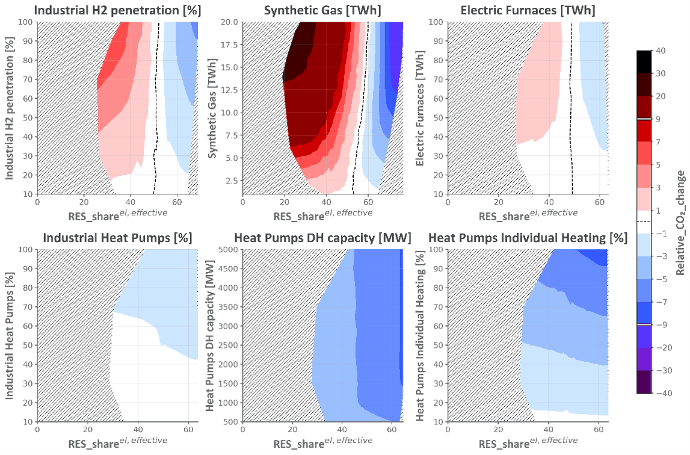
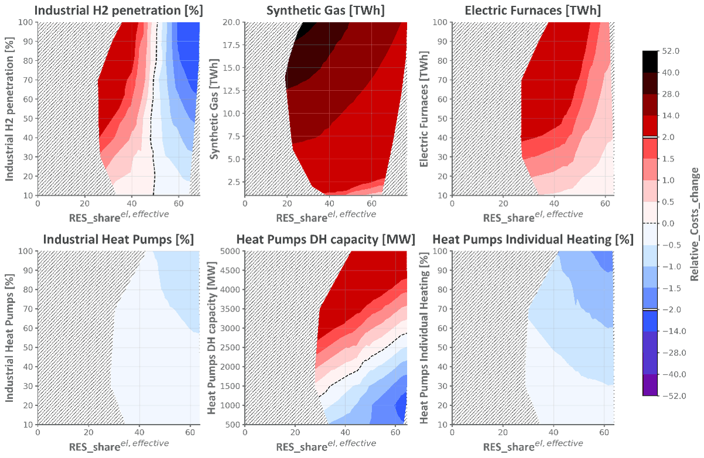

Research explained · Smart Energy, 2026
How AI explains which clean energy technologies work best together
Energy models can tell us the cheapest mix of solar panels, heat pumps and hydrogen for 2050 — but rarely why that mix works. We trained a deep learning model on 40,000 energy system simulations and used explainable AI to open the black box. The answer has a clear message for planners: build renewables first.

The question: why do some technology combinations work better?
Decarbonising a region means combining many measures at once: rooftop and agrivoltaic solar, wind, batteries, heat pumps, building renovation, hydrogen, synthetic gas and the electrification of industry. Energy system models such as EnergyPLAN and our optimisation tool EPLANopt can search for the combinations that minimise costs and CO2 emissions. What they usually don't say is how those technologies help or hinder each other.
That matters. If a technology only pays off once another is in place, the order of deployment becomes a policy decision. Understanding these synergies — when the whole is more than the sum of its parts — is a gap in the scientific literature that this study set out to fill.
The case study: Piemonte in 2050
We modelled the energy system of the Piemonte region in north-west Italy, a highly industrialised European region, for the year 2050, together with the regional energy office. The model covers electricity, heating, transport and industry hour by hour and includes 17 decision variables — from residential rooftop PV and agrivoltaics to batteries, electrolysers, district heating heat pumps, building efficiency and industrial hydrogen — evaluated on two objectives: total annual costs and annual CO2 emissions.
Step 1 — Expert analysis: heat pumps vs Power-to-X
We first used the full EnergyPLAN model to test six electrification technologies against increasing shares of renewable electricity. The result is a clear dichotomy, visible in the figure above:
- Heat pumps — for individual buildings, district heating and low-temperature industry — cut CO2 from the very first unit installed, whatever the share of renewables in the grid. They are "no-regret" measures that should not be postponed.
- Power-to-X and high-temperature electrification — synthetic gas injected into the gas grid, electric furnaces and hydrogen for industry — increase net emissions until renewables cover roughly 50% of electricity demand in real time (about 90% if surplus generation is also counted). Below that threshold, the extra electricity they need comes partly from fossil plants.
The policy implication is direct: renewable expansion must precede or accompany large-scale Power-to-X, not follow it. Deploying hydrogen or synthetic gas too early risks locking in additional emissions.

Costs tell a complementary story. Synthetic gas raises system costs in every scenario because of the electrolyser and methanation plants and the losses of converting electricity to hydrogen and then methane — its role is flexibility and long-duration storage, not cost saving. Individual and industrial heat pumps reduce both costs and emissions when renewables and electrification grow together. District heating heat pumps save money only up to the network's actual heat demand: beyond that, extra capacity adds cost without benefit, so correct sizing is essential.
Step 2 — A deep learning surrogate of the energy system
Expert analysis can only test a handful of combinations: each EnergyPLAN run takes seconds, and 17 variables create an enormous number of possibilities. So we built a surrogate model — a neural network that learns to imitate EnergyPLAN.
- We generated 40,000 scenarios with quasi-random Sobol sampling and simulated each one with EnergyPLAN over 8,784 hours.
- We compared 16 machine learning architectures, from linear regression to XGBoost and neural networks.
- The selected neural network reached R² = 0.999 and, crucially, reproduced the optimal cost–emission Pareto front of the original model. It answers in milliseconds instead of seconds.
An interesting lesson: the model with the best average accuracy was not the best at reproducing the optimal solutions. For energy planning, what counts is fidelity where the best scenarios are.
Step 3 — Explainable AI opens the black box
A fast neural network is still a black box. We used two explainable AI (XAI) methods to understand what it learned:
- SHAP values measure how much each technology pushes costs and emissions up or down. Agrivoltaic solar emerged as the strongest lever for cutting emissions, followed by building energy efficiency — which is also the biggest cost driver. Synthetic gas, electric furnaces and industrial hydrogen showed the same threshold behaviour found in step 1.
- Sobol indices measure how much of a technology's influence depends on interactions with others. Agrivoltaics and synthetic gas were by far the most interaction-dependent variables, while district heating heat pumps and thermal storage act almost independently.
The key finding: solar, batteries and Power-to-Gas work as a chain
Thanks to the surrogate we could test all 136 pairs of the 17 variables. The strongest synergies all belong to one physical chain: solar surplus → storage → Power-to-Gas. Solar power produced at midday, beyond what is needed, is converted into synthetic methane instead of being wasted. Pairs without a storage or Power-to-X element show almost no synergy.
Going one step further, to three-way interactions, revealed that battery storage is the critical mediator between agrivoltaics and synthetic gas: batteries bridge the gap between solar peaks and electrolyser operation. This synergy is emergent — it cannot be predicted from pairs alone and only appears when all three are scaled together. We also found that electrolyser capacity stops adding benefit at around 10 GW in this case: beyond that, the bottleneck is the available renewable surplus, not the electrolyser.
What this means for regional energy planning
- Start with heat pumps and renewables — they deliver emission cuts immediately.
- Sequence Power-to-X after renewables reach a high share; timing decides whether hydrogen and synthetic gas help or harm.
- Plan technologies as packages: solar, batteries and Power-to-Gas create value together that none delivers alone.
- Size infrastructure to real needs, from district heating heat pumps to electrolysers.
The exact thresholds depend on Piemonte's assumptions and should be read as indicative, but the method is designed to be applied to any region or country. The work was carried out with the University of Victoria (Canada), where I was visiting researcher in 2025, and Politecnico di Milano, with data from Regione Piemonte.
Frequently asked questions
What is a surrogate model in energy system modelling?
A surrogate model is a fast approximation of a complex simulation model. It is trained on thousands of runs of the original model, here EnergyPLAN, and then predicts costs and emissions of a new scenario in milliseconds instead of seconds, making it possible to explore hundreds of thousands of technology combinations.
Do Power-to-X technologies always reduce CO2 emissions?
No. In the Piemonte 2050 case study, synthetic gas, electric furnaces and industrial hydrogen only reduced emissions once renewables covered roughly 50% of electricity demand in real time. Below that level, the extra electricity they consume comes partly from fossil sources and net emissions can increase.
What is explainable AI and why use it for energy planning?
Explainable AI (XAI) is a set of methods that make the predictions of a black-box model understandable. SHAP values show how much each technology contributes to costs and emissions, while Sobol indices show how much of that influence depends on interactions with other technologies. Together they turn a fast neural network into insights planners can act on.
Related post: Why energy system models need accuracy, robustness and comprehensibility